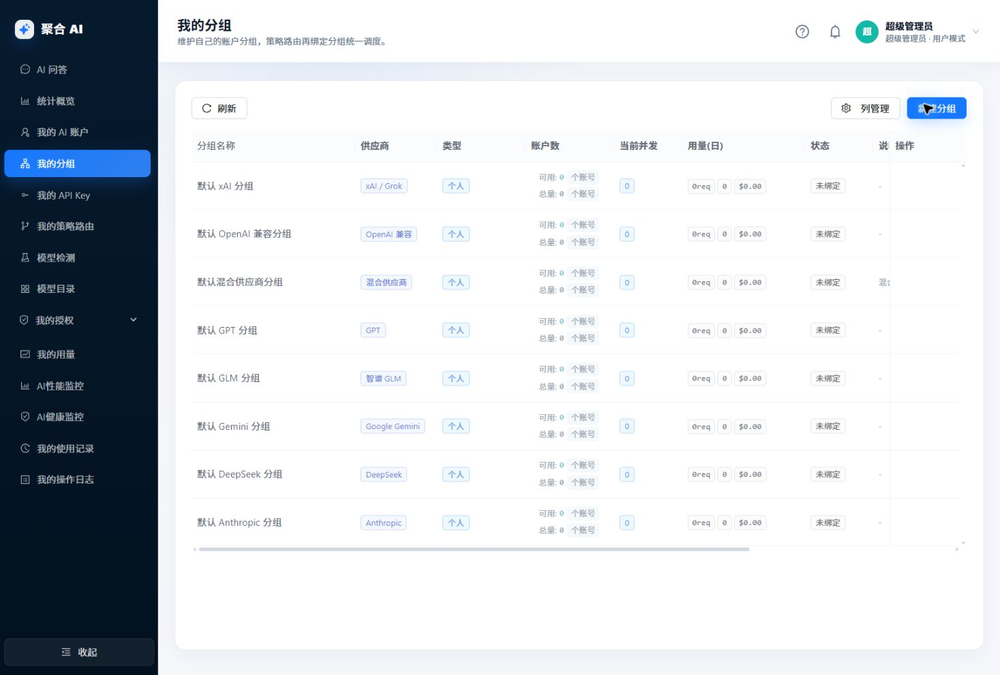
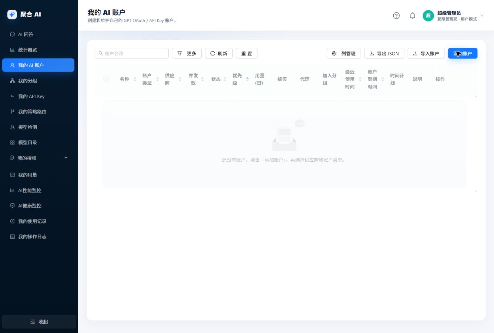
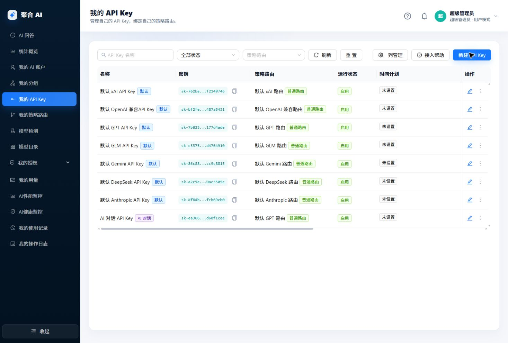

先理解影响范围
一次请求经过五层
每一层只决定一件事。不要为了“快点能用”把 API Key 直接理解成账户，也不要把模型或凭据写进策略。
API Key 决定“谁在调用、还允许调用多少”。它只绑定一套策略路由；额度、过期时间和时间计划在这里生效。下一步：确认它绑定的是预期策略。
策略路由决定“请求采用哪种选组方式”。普通策略只有一个分组；权重、回退、轮询和混合智能才会处理多个分组。下一步：检查模式与分组顺序。
分组决定“账户池的供应商边界和排队规则”。一个分组只接纳同一供应商的账户。下一步：确认目标账户已加入此分组并且分组启用。
AI 账户决定“实际拿什么凭据、协议和模型去调上游”。检查通过、
active、schedulable、未到期且运行态可用的账户才会进入候选。下一步：核对状态、模型、Base URL 和账户并发。上游才是最终处理请求的一方。模型名、协议能力和错误语义必须以这里的真实能力为准；配置页不能把上游不支持的能力变出来。
- 新建分组，先固定供应商边界。
- 新增或导入 AI 账户，完成检查并设为可调度。
- 建立策略路由，选择一个明确的分组选择规则。
- 建立 API Key，绑定策略并设置额度/时间边界。
- 把网关地址、完整 API Key 和模型名写入实际客户端；AI 问答使用系统维护的专属对话 Key，不替代客户端 API Key。
字段级参考
配置字典：填什么，为什么
每个条目都写清楚作用、实际影响和常见误用。展开后可查看设置前的判断规则。
AI 分组建立账户池与供应商边界先选供应商，再定个人/高并发
- 分组名称
- 给人识别用途，不参与调度。名称应写清使用方或场景，例如“研发共享 OpenAI”。
- 所属供应商
- 决定可加入的账户范围。分组保存
providerCode；换供应商不是改个标签，会改变账户候选边界。 - 个人分组
- 适合个人或稳定低并发调用。按账户并发直接调度，没有额外短队列策略。
- 高并发分组
- 适合共享程序流量；会启用短队列、单账户软阈值和可选的单 IP 并发限制。
- 最大单账户排队阈值
- 高并发模式才出现。到达阈值后优先选择其他账户，实际值不会高于该账户的硬并发上限。
- 最大等待时间
- 所有账户硬并发都满时允许在分组内等多久；超时返回
429。它不是上游响应超时。 - 限制单 IP 并发
- 关闭时不限制。开启后按“当前分组 + API Key + IP”限制同时占用数；超过时可立即拒绝或进入等待。
- 启用状态
- 停用分组后，绑定它的策略不会继续将请求调度到这个账户池。
先建分组再建账户的原因：账户的“加入分组”下拉只显示同一供应商的分组，避免把协议边界配乱。

- 刷新重新读取当前账户可管理的分组。
- 新建分组从这里进入与管理员一致的字段表单。
- 列表核对供应商、类型和启用状态，再回看是否被策略引用。
AI 账户声明真实上游与可调度条件凭据、模型、并发和状态都在此层
- 账户名称 / 加入分组
- 名称用于定位；分组决定它能被哪一个账户池选择。账户的供应商必须和分组一致。
- 并发上限
- 这个账户同时承接请求的硬上限。达到后调度器会等待或尝试其他可用账户。
- 优先级
- 同一分组内小值优先，
0比1更靠前。它不替代策略层的分组顺序。 - 特权
super_priority表示超级优先，fallback表示降级备用；只在确实需要固定调度角色时使用。- 状态
active是进入候选的必要条件，不保证当前一定可调度；还要满足schedulable、未到期、时间计划、授权来源和运行态均可用。pending_test等待检查，disabled人工停用。- API Key / 多 Key
- 多个 Key 可轮询或按 1-100 权重轮询；多 Key 账户不支持余额查询，保存后会自动关闭余额查询。
- Base URL
- 填写服务根或版本根，例如
https://api.openai.com/v1；不要填/responses、/chat/completions、/messages这类具体接口。 - 支持模型
- 声明此 Base URL 真正可用的模型，既用于候选过滤，也是别名右侧可选模型的边界。至少选择一个。
- 检查模型
- 用来验证账户链路；先选择确实被支持模型覆盖的模型，再把检查结果当作激活依据。
- 上游接口能力
- 声明真实上游能接收的请求形态。没有勾选的协议请求不会把此账户加入候选；不能用它虚构上游能力。
- 账号模型别名
- 把“客户端协议/模型”映射到“上游协议/模型”。右侧目标必须同时满足账户支持模型和上游接口能力；普通账户的跨协议映射受实际档案限制。
- 代理
- 只影响该账户访问上游的网络路径；不会改变客户端访问本系统的地址。
- 服务等级 / 思考级别
- 只在已选模型声明支持时可用；不支持时应清空或改选模型，不能强制覆盖。
新建或导入后，先在 模型检测 / 账户检查确认“模型可用、凭据正确、协议匹配”，再将账户用于真实流量。

- 导入用于结构化迁移，必须先解析预览。
- 添加账户用于逐个填写凭据、协议档案和模型。
- 空状态说明还没有可维护的账户，不表示 API Key 已能调用上游。
策略路由定义 API Key 选择分组的规则API Key 只认识策略，不直接认识账户
普通只能绑定一个启用分组。选“成本优先”时保留当前账户缓存和会话粘黏；“速度优先”只对可重放文本观察首字慢样本，图像和副作用请求不使用这套切换。
权重至少两个启用分组，按分组权重比例分流；总权重不能超过 100。
故障回退第一行是主用分组，后续是备用分组；主用恢复后仍会优先主用。
轮询至少两个启用分组，按当前排列顺序依次调度；拖动顺序会改变下一个选择次序。
混合智能先用评分模型估计能力等级，再按等级路由到目标模型和分组。评分、质量检查和缓存会增加复杂度与潜在额外调用，应先让基础路由稳定。
- 名称 / 说明
- 只用于后台识别。名称建议带用途，避免在多个 API Key 之间误选共享策略。
- 状态
- 停用后，绑定该策略的 API Key 不再通过它进入分组调度。
- 首字截止与慢速参数
- 只在普通 + 速度优先出现。首字截止、慢速触发次数、窗口期、恢复次数、探针间隔和降级租约一起决定“何时确认慢、何时恢复”。
- 分组绑定
- 分组是策略的唯一调度目标。修改共享策略会影响所有绑定它的 API Key；需要复制配置时，应新建同配置策略再绑定新 API Key。
API Key把调用身份接到一套策略完整密钥只在创建/刷新时展示
- 名称
- 只用于人识别；默认 API Key 和 AI 对话 API Key 的名称不可修改。
- 策略路由
- API Key 只绑定策略路由。分组、模型和供应商选择逻辑都在策略中维护。
- 运行状态
- 只有
active会接受调用。设置时间计划后，保存与计划边界都会直接更新这个状态。 - 过期时间
- 到达时间后不再可用；它是绝对时间边界，不受时间计划替代。
- 美元额度
- “n 小时美元额度”可按 n 小时、每日、每周、每月设置美元上限；未开启的项目不限制。它约束的是该 Key 的调用额度。
- 时间计划
- 开启后，只在选定星期与开始/结束时间内参与调度；未命中窗口会被暂时跳过。多个窗口用于工作日/时段组合。
- 说明
- 仅作后台标记，不参与路由、额度或权限判断。
创建完成立即复制完整密钥到客户端安全配置；之后列表和日志不会再次给出完整明文。

- 筛选区按状态、策略或名称排查一把 Key 的边界。
- 新建 API Key创建时选择策略、额度、到期时间和时间计划。
- 列表只显示掩码值；这张图来自隔离实例，所有
sk-...均为不可用的演示值。
批量录入前先预览
账户导入与迁移
导入只帮你把结构化资料变成待检查账户，不会替你确认凭据真实可用。
- 在我的 AI 账户打开导入。普通用户只导入到自己名下；管理员可在管理账户页选择目标系统账户导入。
- 只粘贴
juhe-ai-account-import v1JSON，不要粘贴 Markdown 代码块或 CSV。 - 先做“解析预览”，逐项处理协议档案、分组、代理引用和重复项提示。
- 确认导入后，不存在的分组可以按选项自动创建；同名账户可跳过。
单次请求上限约
256KB，最多 50 个账户，最多 20 个代理。普通用户不能创建新代理。即使来源写了 active，导入账户仍会以 pending_test 创建，检查通过后才可参与调度。给 AI 整理来源数据时，如何避免编造字段
请根据我附上的《juhe-ai AI 账户导入协议 v1》Markdown，把下面账号数据转换为 juhe-ai-account-import v1 JSON。 要求： 1. 只输出合法 JSON，不要输出解释、Markdown 代码块或注释。 2. 顶层 type 固定为 juhe-ai-account-import，version 固定为数字 1。 3. 每个账户显式填写 name、providerCode、providerProtocolProfileId、type、status、credentials，以及 groupName 或 groupId。 4. API Key 账号使用 type: api_key；GPT OAuth 使用 type: oauth；Gemini Google OAuth 使用 type: google_oauth。 5. providerProtocolProfileId 是协议档案唯一入口；不要从 base_url 或旧字段猜测档案。 6. 不要编造来源里没有的 token、API Key、邮箱、账号 ID、代理密码或模型列表。 7. 不确定信息放到 notes；不能判断立即可调度时 status 填 pending_test 或 disabled。
调用前核对模型
AI 问答、模型与策略验证
站内对话和客户端中转是两条不同入口，诊断也应从实际症状开始。
用事实而非猜测判断
统计、性能、健康和记录
这五类页面回答的是不同问题：用了多少、慢不慢、能不能调度、某一笔是否成功、谁改过配置。
从上到下定位
排障顺序
不要先改参数。先确认请求走到哪一层，再只改能解释当前证据的配置。
401 / 额度 / 时间边界先看 API Key 是否启用、未过期、未超过额度且命中时间计划。
模型不存在或不支持核对客户端模型名、别名映射、账户支持模型和上游接口能力。
没有可调度账户核对策略绑定分组、分组启用、账户分组，以及
active、schedulable、到期/时间计划、授权来源和运行态。分流结果不对先确认 Key 绑定哪套策略，再查策略模式、分组顺序/权重和账户优先级。
慢或偶发失败先查使用记录，再结合 AI 健康与 AI 性能；不要用一条慢记录就调整全局超时。
配置被改过在操作日志确认谁、何时、对哪类资源执行了写入，然后决定恢复还是继续排查。